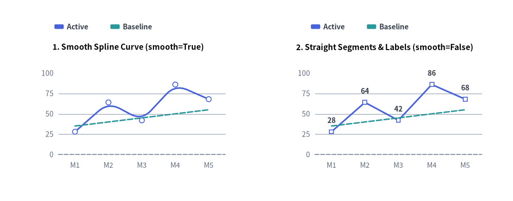
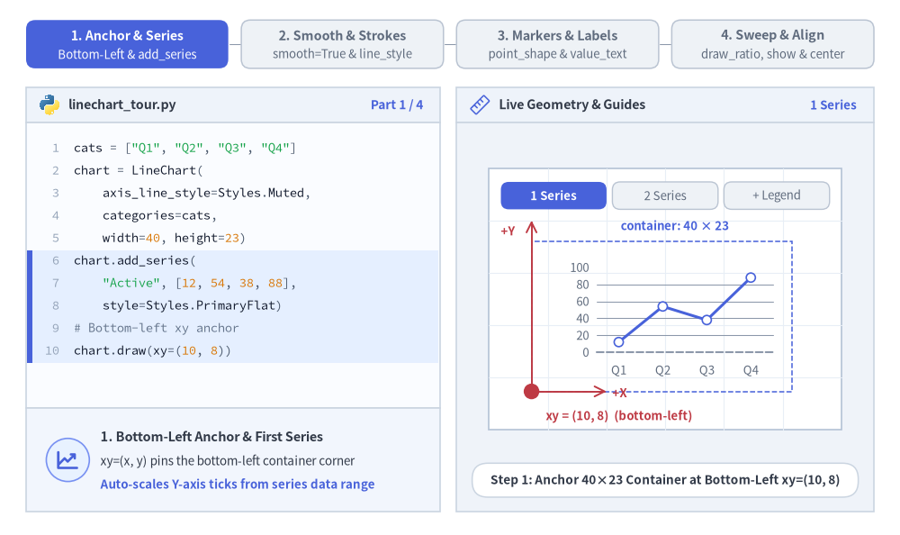
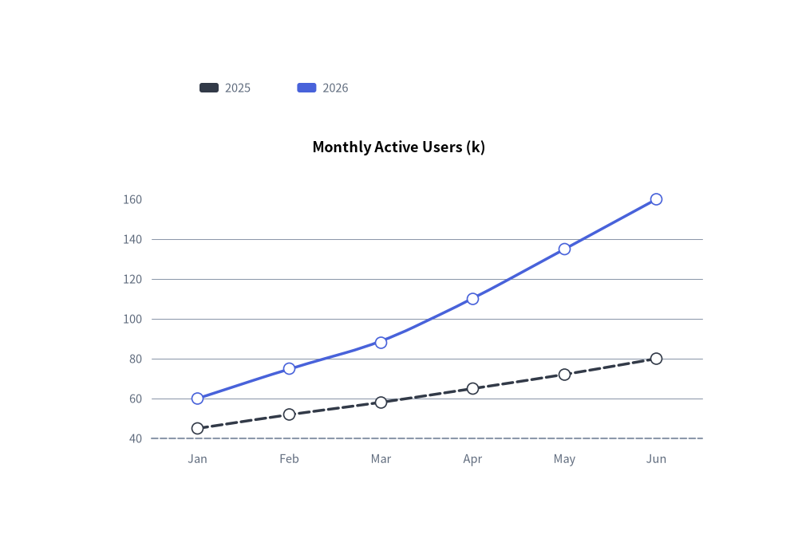
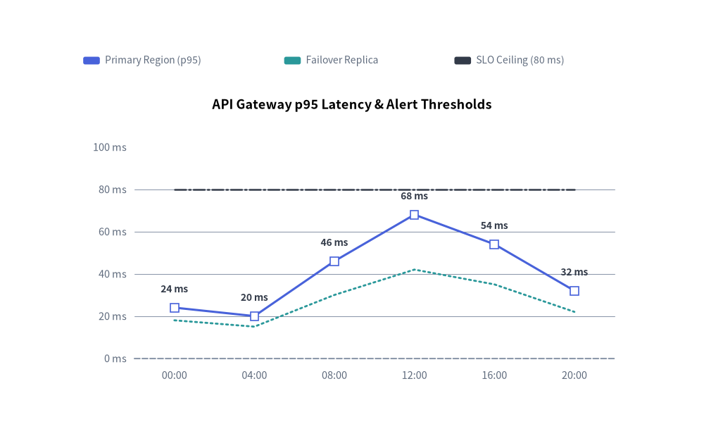

Line Chart（折れ線グラフ）：連続トレンド・マーカー・スプライン
LineChart コンポーネント（drawlib.charts.line）は、順序付きカテゴリや時間軸に沿った数値トレンドを可視化します。直線セグメント（smooth=False）、滑らかなスプライン曲線（smooth=True）、系列ごとの頂点マーカー形状（"circle"、"square"、"none"）、線種パターン（"solid"、"dashed"、"dotted"、"dashdot"）、頂点上のインライン数値ラベル、および分離配置型の凡例描画をサポートしています。

Source Code
from drawlib.canvas import save, setup
from drawlib.charts.line import LineChart
from drawlib.styles import Styles
setup(width=132, height=52)
categories = ["M1", "M2", "M3", "M4", "M5"]
active_vals = [28.0, 64.0, 42.0, 86.0, 68.0]
baseline_vals = [35.0, 40.0, 45.0, 50.0, 55.0]
# Left: Smooth Spline Curve (smooth=True)
smooth_chart = LineChart(
axis_line_style=Styles.MutedDashed,
categories=categories,
axis_text_style=Styles.Muted.patch(text_size=10.0),
grid_style=Styles.MutedThin,
width=56.0,
height=36.0,
smooth=True,
show_points=True,
point_size=0.65,
title="1. Smooth Spline Curve (smooth=True)",
title_style=Styles.BlackBold.patch(text_size=11.0),
)
smooth_chart.add_series("Active", active_vals, style=Styles.PrimaryFlat, line_width=2.2)
smooth_chart.add_series("Baseline", baseline_vals, style=Styles.SecondaryFlat, line_style="dashed", point_shape="none")
smooth_chart.configure_y_axis(min_value=0.0, max_value=100.0, tick_step=25.0)
smooth_chart.draw(xy=(5.0, 6.0))
smooth_chart.draw_legend(xy=(14.0, 45.0), text_style=Styles.DarkBold.patch(text_size=10.0), orientation="horizontal")
# Right: Straight Segments & Value Labels (smooth=False)
straight_chart = LineChart(
axis_line_style=Styles.MutedDashed,
categories=categories,
axis_text_style=Styles.Muted.patch(text_size=10.0),
grid_style=Styles.MutedThin,
value_text_style=Styles.DarkBold.patch(text_size=10.0),
width=56.0,
height=36.0,
smooth=False,
show_points=True,
point_shape="square",
point_size=0.65,
title="2. Straight Segments & Labels (smooth=False)",
title_style=Styles.BlackBold.patch(text_size=11.0),
)
straight_chart.add_series("Active", active_vals, style=Styles.PrimaryFlat, line_width=2.2)
straight_chart.add_series("Baseline", baseline_vals, style=Styles.SecondaryFlat, line_style="dashed", point_shape="none")
straight_chart.configure_y_axis(min_value=0.0, max_value=100.0, tick_step=25.0)
straight_chart.draw(xy=(71.0, 6.0))
straight_chart.draw_legend(xy=(80.0, 45.0), text_style=Styles.DarkBold.patch(text_size=10.0), orientation="horizontal")
save()
1. 基本概念と基本的な使い方
LineChart は .add_series(...) によって複数系列のカテゴリトレンドを段階的に構築し、デフォルトで (width, height) コンテナの左下 (x, y) を基準にアンカーします（align="center" で中央揃えも可）。直線セグメント（smooth=False）と 3 次スプライン曲線（smooth=True）の切り替え、線種パターン・頂点マーカー・インライン数値ラベルのカスタマイズに加え、Y 軸の自動スケール範囲を固定したまま系列をスイープ描画したり非表示にしたりできます。

- 左下アンカー・系列・凡例（
xy,add_series,draw_legend）: デフォルトで(width, height)チャートコンテナを左下xyにアンカーし（align="bottom_left"）、.add_series(...)のトレンド線と自由配置可能なdraw_legend(...)を組み合わせます。 - 直線セグメントと滑らかなスプライン・線種（
smooth,line_style,line_width）: シャープな直線折れ線（smooth=False）と滑らかな 3 次スプライン曲線（smooth=True、3 点以上）を切り替えられるほか、系列ごとに"solid"、"dashed"、"dotted"、"dashdot"の線種を指定できます。 - 頂点マーカーとインライン数値ラベル（
show_points,point_shape,value_text_style）: 系列単位で"circle"、"square"、"none"マーカー（point_size）を設定できます（水平な目標線などにpoint_shape="none"を指定すると、頂点マーカーとvalue_text_styleの数値ラベルの両方が抑止されます）。 - 水平スイープ・軸スケール固定の
.show・中央配置（draw_ratio,align）:draw_ratioで左から右への段階的スイープを描画したり、Y 軸の自動スケール範囲を変えずにseries.show = Falseで非表示化したり、align="center"で(cx, cy)を中心に配置したりできます。
2. クイック例：滑らかなスプラインによるユーザー成長トレンド
from drawlib.canvas import save, setup
from drawlib.charts.line import LineChart
from drawlib.styles import Styles
setup(width=100, height=68)
chart = LineChart(
axis_line_style=Styles.MutedDashed,
categories=["Jan", "Feb", "Mar", "Apr", "May", "Jun"],
axis_text_style=Styles.Muted.patch(text_size=10.5),
grid_style=Styles.MutedThin,
width=82,
height=45,
title="Monthly Active Users (k)",
title_style=Styles.BlackBold.patch(text_size=13.0),
smooth=True,
show_points=True,
)
chart.add_series("2025", [45, 52, 58, 65, 72, 80], style=Styles.DarkFlat, line_width=2.5, line_style="dashed")
chart.add_series("2026", [60, 75, 88, 110, 135, 160], style=Styles.PrimaryFlat, line_width=2.5)
chart.draw(xy=(9, 7))
chart.draw_legend(xy=(25, 57), text_style=Styles.Muted.patch(text_size=10.5), orientation="horizontal")
save()

3. 直線セグメント・カスタムマーカー・線種・頂点ラベル
smooth=False（直線セグメント）に value_text_style、系列ごとの point_shape（"square"、"circle"、"none"）、および異なる line_style パターン（"solid"、"dotted"、"dashdot"）を組み合わせることで、テレメトリ指標と SLA 閾値ラインを一目で比較できるチャートを作成できます。
from drawlib.canvas import save, setup
from drawlib.charts.line import LineChart
from drawlib.styles import Styles
setup(width=110, height=70)
chart = LineChart(
axis_line_style=Styles.MutedDashed,
categories=["00:00", "04:00", "08:00", "12:00", "16:00", "20:00"],
width=88.0,
height=48.0,
title="API Gateway p95 Latency & Alert Thresholds",
title_style=Styles.BlackBold.patch(text_size=13.0),
smooth=False,
show_points=True,
axis_text_style=Styles.Muted.patch(text_size=10.5),
grid_style=Styles.MutedThin,
value_text_style=Styles.DarkBold.patch(text_size=10.0),
)
chart.add_series(
"Primary Region (p95)",
[24.0, 20.0, 46.0, 68.0, 54.0, 32.0],
style=Styles.PrimaryFlat,
line_width=2.2,
point_shape="square",
point_size=0.8,
)
chart.add_series(
"Failover Replica",
[18.0, 15.0, 30.0, 42.0, 35.0, 22.0],
style=Styles.SecondaryFlat,
line_width=2.0,
line_style="dotted",
point_shape="none",
)
chart.add_series(
"SLO Ceiling (80 ms)",
[80.0, 80.0, 80.0, 80.0, 80.0, 80.0],
style=Styles.DarkFlat,
line_width=1.8,
line_style="dashdot",
point_shape="none",
)
chart.configure_y_axis(min_value=0.0, max_value=100.0, tick_step=20.0, format="{:.0f}", unit="ms")
chart.draw(xy=(11.0, 8.0))
chart.draw_legend(
xy=(13.0, 60.5),
text_style=Styles.Muted.patch(text_size=10.0),
orientation="horizontal",
swatch_width=2.6,
swatch_height=1.2,
item_gap=4.0,
)
save()

4. API リファレンス
コンストラクタ（LineChart）
すべてのコンストラクタ引数はキーワード専用引数（*）です。
from drawlib.charts.line import Axis, DrawDirection, FormatterType, LineChart, LineStyle, PointShape, Series
chart = LineChart(
*,
axis_line_style: Style,
categories: list[str],
width: float = 80.0,
height: float = 50.0,
show_points: bool = True,
point_shape: PointShape = "circle",
point_size: float = 0.7,
smooth: bool = False,
axis_text_style: Style | None = None,
grid_style: Style | None = None,
value_text_style: Style | None = None,
background_style: Style | None = None,
title: str = "",
title_style: Style | None = None,
)
| パラメータ | 型 | デフォルト | 説明 |
|---|---|---|---|
axis_line_style |
Style |
必須 | 座標ベースラインのストロークに用いる必須アンカースタイル。 |
categories |
list[str] |
必須 | 水平 X 軸に沿った順序付きカテゴリラベル。 |
width / height |
float |
80.0 / 50.0 |
キャンバス単位でのチャート全体のバウンディングボックス寸法。 |
show_points |
bool |
True |
各頂点座標にマーカーを描画するかどうか。 |
point_shape |
"circle" | "square" | "none" |
"circle" |
デフォルトの頂点マーカー形状（PointShape）。 |
point_size |
float |
0.7 |
キャンバス単位でのデフォルトのマーカー半径（四角形の場合は半幅）。 |
smooth |
bool |
False |
True の場合、各頂点を通る滑らかな曲線セグメントを補間します。 |
axis_text_style |
Style | None |
None |
Y 軸目盛りラベルおよび X 軸カテゴリ名のスタイル。None の場合は省略されます。 |
grid_style |
Style | None |
None |
水平方向の Y 軸グリッド線のスタイル。None の場合は省略されます。 |
value_text_style |
Style | None |
None |
頂点マーカーの上部に描画される数値ラベルのスタイル。None の場合は省略されます。 |
background_style |
Style | None |
None |
チャート外枠の背景カードのスタイル。None の場合は省略されます。 |
title |
str |
"" |
コンテナ上部に描画されるチャートタイトル文字列。 |
title_style |
Style | None |
None |
title のタイポグラフィスタイル。タイトルを描画するには必須です。 |
メソッドとプロパティ
add_series(name: str, values: list[float], style: Style, line_width: float = 2.0, line_style: LineStyle = "solid", point_shape: PointShape | None = None, point_size: float | None = None, legend_text_style: Style | None = None, *, show: bool = True, draw_ratio: float = 1.0, draw_direction: DrawDirection = "left_to_right") -> Series: 折れ線系列を登録し、変更可能なSeriesインスタンスを返します。line_styleには"solid"、"dashed"、"dotted"、"dashdot"を指定できます。point_shapeとpoint_sizeはその系列に対してチャート全体のデフォルト値を上書きします。configure_y_axis(...) -> Axis/configure_x_axis(...) -> Axis: 垂直の数値軸（scale、min_value、max_value、ticks、tick_step、format、unit、label）または水平のカテゴリ軸（show_axis_line、line_style、tick_label_style）を設定します。詳細は 軸・スケール・凡例 を参照してください。get_size() -> tuple[float, float]: チャートコンテナの(width, height)を返します。draw(xy: tuple[float, float] = (0.0, 0.0), *, width: float | None = None, height: float | None = None, align: Literal["bottom_left", "center"] = "bottom_left", scale: float = 1.0) -> None:xyを基準（デフォルトは"bottom_left"、または"center"）としてチャートを描画します。一時的な寸法上書きや比例scaleにも対応しています。draw_legend(xy: tuple[float, float], text_style: Style, orientation: Literal["vertical", "horizontal"] = "vertical", swatch_width: float = 2.4, swatch_height: float = 1.2, item_gap: float = 4.0, *, scale: float = 1.0) -> None: 分離配置された系列凡例をxyに描画します。- プロパティ:
chart.series -> list[Series]: 登録済みSeriesオブジェクトのコピーを返します。chart.x_axis -> Axis/chart.y_axis -> Axis: 水平軸・垂直軸のAxisインスタンスへの直接アクセスを提供します。